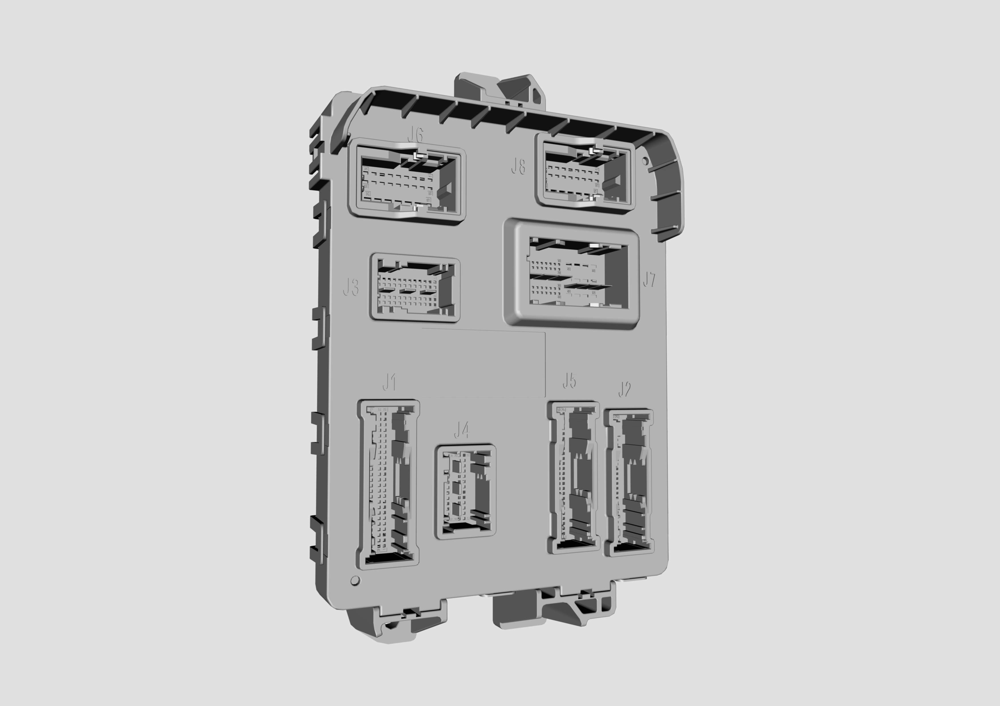
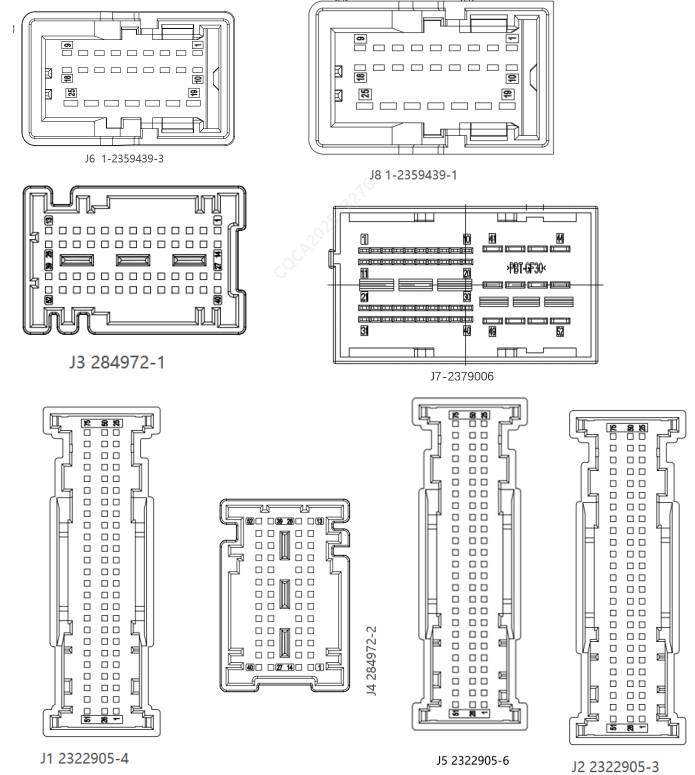

1. Описание функции: интеллектуальный контроллер кузова в сборе BDC (передний домен) расположен на металлической панели левой боковины со стороны водителя и выполняет маршрутизацию сигналов, управление стеклами, дверями и другие функции.
2. Схематичное изображение внешнего вида контроллера:

3. Схематичное изображение разъемов контроллера:

4. Описание функций контактов:
| Контакт | Номинальный ток | Описание функции | Тип сигнала |
| Жгут проводов шасси и комбинации приборов — модель разъема (75 PIN): 2322905-4 (J1) | |||
| J1-1 | 1A | Передняя низкочастотная антенна - / Immo | Ant- |
| J1-2 | 10mA | Кнопка A/C | I-D-L |
| J1-3 | 10mA | Кнопка AUTO | I-D-L |
| J1-4 | / | Масса кнопки запуска двигателя в сборе | GND (Сигнальная масса) |
| J1-5 | 10mA | Сигнал правого датчика интенсивности солнечного света | I-AD |
| J1-6 | 10mA | Сигнал левого датчика интенсивности солнечного света | I-AD |
| J1-7 | 30mA | Контрольная лампа плафона освещения салона в положении DOOR | O-H |
| J1-8 | 30mA | Красная контрольная лампа кнопки запуска двигателя | O-H |
| J1-9 | 30mA | Контрольная лампа кнопки AUTO | O-H |
| J1-10 | 30mA | Фоновая подсветка кнопки «Старт-стоп» (ШИМ) | O-H |
| J1-11 | 30mA | Контрольная лампа плафона освещения салона в положении ON | O-H |
| J1-12 | / | / | / |
| J1-13 | / | / | / |
| J1-14 | 5mA | Запрет беспроводной зарядки | O-L |
| J1-15 | 5mA | Переключатель низкой скорости заднего стеклоочистителя (не подрулевой переключатель) | I-D-H |
| J1-16 | 5mA | Обратная связь реле отключения питания контроллера интеллектуального вождения | I-D-H |
| J1-17 | 5mA | Переключатель переднего омывателя (не подрулевой переключатель) | I-D-H |
| J1-18 | 20mA | Сигнал P-передачи 1 (подрулевой переключатель) | I-A |
| J1-19 | 5mA | Переключатель лючка топливного бака высокого давления | I-D-L |
| J1-20 | / | Опорная масса переключателя регулировки яркости фоновой подсветки | GND (Сигнальная масса) |
| J1-21 | 150mA | Реле IG1 | O-L |
| J1-22 | 30mA | Контрольная лампа иммобилайзера | O-L |
| J1-23 | 100mA | Питание 5 V 2 | Питание |
| J1-24 | / | Центральный модуль терморегулирования | LIN |
| J1-25 | 10mA | Управляющий сигнал вентилятора отопителя переднего ряда | O-A |
| J1-26 | 1A | Передняя низкочастотная антенна + / Immo | Ant+ |
| J1-27 | 1A | Резервная низкочастотная антенна + | Ant+ |
| J1-28 | 1A | Резервная низкочастотная антенна - | Ant- |
| J1-29 | 10mA | Режим движения 1 (АЦП-опрос) | I-A |
| J1-30 | 10mA | Сигнал обратной связи положения заслонки регулирования температуры (правая) | I-AD |
| J1-31 | 10mA | Сигнал обратной связи положения заслонки регулирования температуры (левая) | I-AD |
| J1-32 | 10mA | Узел датчика температуры в салоне | I-AD |
| J1-33 | 10mA | Сигнал обратной связи положения заслонки рециркуляции воздуха | I-AD |
| J1-34 | 10mA | Сигнал Холла 1 (подрулевой переключатель) | I-Hall |
| J1-35 | 10mA | Сигнал Холла 4 (подрулевой переключатель) | I-Hall |
| J1-36 | 10mA | Сигнал Холла 3 (подрулевой переключатель) | I-Hall |
| J1-37 | 100mA | Кнопка обогрева ветрового стекла | I-D-L |
| J1-38 | 10mA | Режим движения 2 (самовозвратный, активный уровень — низкий) | I-D-L |
| J1-39 | / | Переключатель заднего омывателя (подрулевой переключатель) | I-D-L |
| J1-40 | 5mA | Левый указатель смены полосы | I-D-L |
| J1-41 | 5mA | Начальная передача рулевого управления | I-D-L |
| J1-42 | 5mA | Переключатель автоматического режима фар (начальная позиция света) | I-D-L |
| J1-43 | 5mA | Прерывистый режим стеклоочистителя | I-D-L |
| J1-44 | 20mA | Сигнал P-передачи 2 (подрулевой переключатель) | I-A |
| J1-45 | 5mA | Переключатель света для обгона | I-D-L |
| J1-46 | 5mA | Выключатель аварийной сигнализации | I-D-L |
| J1-47 | / | GND3 (VCU, аналоговая масса), подрулевой переключатель | GND (Сигнальная масса) |
| J1-48 | 5mA | Обратная связь реле IG1 | I-D-H |
| J1-49 | / | Масса NTC обогрева рулевого колеса | GND (Сигнальная масса) |
| J1-50 | 10mA | Сигнал обратной связи вентилятора отопителя переднего ряда | I-AD |
| J1-51 | / | Датчик температуры 2 на выходе воздушного отопителя PTC (датчик температуры 2 поверхности APTC) | I-A |
| J1-52 | 10mA | Сигнал обратной связи положения заслонки направления обдува | I-AD |
| J1-53 | 5mA | Датчик освещенности | I-A |
| J1-54 | / | Датчик температуры дефлектора 1 | I-A |
| J1-55 | 10mA | Датчик температуры 4+ зарядного разъема (положение L3) | I-A |
| J1-56 | 10mA | Сигнал температуры испарителя | I-AD |
| J1-57 | 5mA | Вход NTC обогрева рулевого колеса | I-A |
| J1-58 | 10mA | Обратная связь по положению девятиходового (четырехходового) клапана | I-AD |
| J1-59 | / | Сигнальная масса терморегулирования | GND (Сигнальная масса) |
| J1-60 | 10mA | Сигнал Холла 5 (подрулевой переключатель) | I-Hall |
| J1-61 | 10mA | Сигнал Холла 6 (подрулевой переключатель) | I-Hall |
| J1-62 | 10mA | Сигнал Холла 2 (подрулевой переключатель) | I-Hall |
| J1-63 | 5mA | Переключатель дальнего света | I-D-L |
| J1-64 | 5mA | Переключатель автоматического / прерывистого режима переднего стеклоочистителя | I-D-H |
| J1-65 | 5mA | Переключатель низкой скорости переднего стеклоочистителя | I-D-H |
| J1-66 | 5mA | Переключатель обогрева ветрового стекла | I-D-L |
| J1-67 | 5mA | Переключатель левого указателя поворота (подрулевой переключатель, второе фиксированное положение влево) | I-D-L |
| J1-68 | 5mA | Переключатель правого указателя поворота (подрулевой переключатель, второе фиксированное положение вправо) | I-D-L |
| J1-69 | 5mA | Режим AUTO 2 стеклоочистителя | I-D-L |
| J1-70 | 5mA | Выключатель звукового сигнала | I-D-L |
| J1-71 | 5mA | Правый указатель смены полосы | I-D-L |
| J1-72 | 5mA | Кнопка включения/выключения расхода воздуха | I-D-L |
| J1-73 | / | Выключатель системы «Старт-стоп» 2 | I-A |
| J1-74 | / | Выключатель системы «Старт-стоп» 1 | I-A |
| J1-75 | 5mA | Обратная связь реле ACC | I-D-H |
| Жгут проводов шасси — модель разъема (75 PIN): 2322905-3 (J2) | |||
| J2-1 | / | Сигнальная масса PE ручки двери | GND (Сигнальная масса) |
| J2-2 | / | / | / |
| J2-3 | / | / | / |
| J2-4 | 2.5mA | Датчик температуры 1+ зарядного разъема (положение L) | I-A |
| J2-5 | 5mA | Датчик SBR сиденья водителя | I-D-L |
| J2-6 | 10mA | Выключатель левого заднего электронного детского замка | I-D-L |
| J2-7 | 5mA | Состояние блокировки левого заднего электронного детского замка | I-D-L |
| J2-8 | 10mA | Вход состояния положения скрытой ручки двери: складывание левой задней | I-D-L |
| J2-9 | 5mA | Сигнал диагностической обратной связи указателей поворота, задний | I-D-L |
| J2-10 | 10mA | Вход состояния положения скрытой ручки двери: раскладывание со стороны водителя | I-D-L |
| J2-11 | 10mA | Вход состояния положения скрытой ручки двери: складывание со стороны водителя | I-D-L |
| J2-12 | 6mA | Вход блокировки органов управления пассажиров (w_lock) (переключатель блокировки стекол) | I-D-L |
| J2-13 | 5mA | Переключатель центрального запирания | I-D-L |
| J2-14 | 5mA | Переключатель PE отпирания багажного отделения | I-D-L |
| J2-15 | / | 充电插座温度探头1,2共线 | GND (Сигнальная масса) |
| J2-16 | 5mA | Переключатель низкой скорости заднего стеклоочистителя (подрулевой переключатель) | I-D-L |
| J2-17 | 5mA | Переключатель высокой скорости переднего стеклоочистителя (подрулевой переключатель) | I-D-L |
| J2-18 | 5mA | Состояние двери со стороны водителя | I-D-L |
| J2-19 | 5mA | Состояние двери со стороны переднего пассажира | I-D-L |
| J2-20 | 5mA | Состояние замка со стороны водителя | I-D-L |
| J2-21 | 20mA | Обратная связь 1 электронного замка зарядного пистолета | I-D-L |
| J2-22 | 20mA | Обратная связь 2 электронного замка зарядного пистолета | I-D-L |
| J2-23 | 5mA | Выключатель положений P/N | I-D-L |
| J2-24 | 10mA | Вход сигнала столкновения | I-PWM |
| J2-25 | 10mA | Бесконтактный датчик открывания багажника ногой | I-PWM |
| J2-26 | 10mA | Температура на впуске компрессора | I-AD |
| J2-27 | 10mA | Температура на выпуске компрессора | I-AD |
| J2-28 | / | / | / |
| J2-29 | 10mA | Датчик температуры воздуховода 4 | I-AD |
| J2-30 | / | Зарядный разъем, контакт 1 GND | GND (Сигнальная масса) |
| J2-31 | 10mA | Вход состояния положения скрытой ручки двери: раскладывание со стороны переднего пассажира | I-D-L |
| J2-32 | 5mA | Выключатель правого заднего электронного детского замка | I-D-L |
| J2-33 | 10mA | Вход состояния положения скрытой ручки двери: складывание со стороны переднего пассажира | I-D-L |
| J2-34 | 5mA | Состояние блокировки правого заднего электронного детского замка | I-D-L |
| J2-35 | 30mA | Сигнал остановки заднего стеклоочистителя | I-D-L |
| J2-36 | 10mA | Вход состояния положения скрытой ручки двери: складывание правой задней | I-D-L |
| J2-37 | 10mA | Вход состояния положения скрытой ручки двери: раскладывание правой задней | I-D-L |
| J2-38 | 5mA | Состояние правой задней двери | I-D-L |
| J2-39 | 5mA | Состояние левой задней двери | I-D-L |
| J2-40 | 5mA | Переключатель плафона освещения салона в положении ON | I-D-L |
| J2-41 | 5mA | Переключатель плафона освещения салона в положении DOOR | I-D-L |
| J2-42 | 5mA | Переключатель левого заднего плафона освещения салона | I-D-L |
| J2-43 | 5mA | Переключатель правого заднего плафона освещения салона | I-D-L |
| J2-44 | 5mA | Состояние замка со стороны переднего пассажира (состояние правого переднего замка) | I-D-L |
| J2-45 | 5mA | Переключатель отпирания центрального замка | I-D-L |
| J2-46 | 5mA | Состояние багажного отделения | I-D-L |
| J2-47 | 10mA | Правый задний центральный датчик радара | I-PWM |
| J2-48 | 10mA | Левый задний датчик радара | I-PWM |
| J2-49 | 10mA | Левый задний центральный датчик радара | I-PWM |
| J2-50 | 10mA | Правый задний датчик радара | I-PWM |
| J2-51 | 150mA | Выход на правый задний плафон освещения салона | O-L |
| J2-52 | 150mA | Выход на левый задний плафон освещения салона / выход на задний плафон освещения салона | O-L |
| J2-53 | 0.5A | Лампа освещения багажника | O-H |
| J2-54 | 20mA | Светодиодный индикатор зарядного разъема BLUE (H) | O-H |
| J2-55 | 30mA | Контрольная лампа блокировки замков | O-L |
| J2-56 | 0.5A | Выход на подсветку околодверного пространства | O-H |
| J2-57 | 0.8A | Управление электромагнитным запорным клапаном охладителя батареи | O-L |
| J2-58 | 30mA | Выход на контрольную лампу блокировки органов управления пассажиров (контрольная лампа блокировки стекол) | O-L |
| J2-59 | 60mA | Общий вывод привода левого зеркала заднего вида | O-H-Bridge |
| J2-60 | 60mA | Привод регулировки левого зеркала заднего вида влево/вправо | O-H-Bridge |
| J2-61 | 60mA | Привод регулировки левого зеркала заднего вида вверх/вниз | O-H-Bridge |
| J2-62 | 60mA | Общий вывод привода правого зеркала заднего вида | O-H-Bridge |
| J2-63 | 60mA | Привод регулировки правого зеркала заднего вида вверх/вниз | O-H-Bridge |
| J2-64 | 60mA | Привод регулировки правого зеркала заднего вида влево/вправо | O-H-Bridge |
| J2-65 | 10mA | Управляющий сигнал вентилятора отопителя заднего ряда | O-A |
| J2-66 | 10mA | Датчик температуры воздуховода 3 | I-AD |
| J2-67 | / | Масса переключателя стеклоподъемников двери водителя | GND (Сигнальная масса) |
| J2-68 | 5mA | Переключатель PE левой задней ручки двери | I-D-L |
| J2-69 | 5mA | Переключатель PE правой задней ручки двери | I-D-L |
| J2-70 | 5mA/10mA | Переключатель PE ручки двери со стороны водителя | I-D-L |
| J2-71 | 5mA/10mA | Переключатель PE ручки двери со стороны переднего пассажира | I-D-L |
| J2-72 | / | Переключатель переднего омывателя (подрулевой переключатель) | I-D-L |
| J2-73 | 100mA | Питание задних датчиков радара | O-H |
| J2-74 | 1A | Выход складывания зеркал заднего вида | O-H-Bridge |
| J2-75 | 1A | Выход раскладывания зеркал заднего вида | O-H-Bridge |
| Жгут проводов моторного отсека — модель разъема (52 PIN): 284972-1 (J3) | |||
| J3-1 | 10mA | Сигнал датчика качества воздуха | I-PWM |
| J3-2 | 100mA | Питание 5 V 1 | Питание |
| J3-3 | 100mA | Питание передних датчиков радара | O-H |
| J3-4 | / | / | / |
| J3-5 | / | / | / |
| J3-6 | 10mA | Передний датчик радара 2 | I-PWM |
| J3-7 | 10mA | Передний датчик радара 1 | I-PWM |
| J3-8 | 10mA | Обратная связь положения пропорционального клапана контура батареи | I-AD |
| J3-9 | 2.5mA | Датчик температуры 2+ зарядного разъема (положение N) | I-A |
| J3-10 | 10mA | Температура PT3 | I-AD |
| J3-11 | 10mA | Датчик температуры 3+ зарядного разъема (положение L2) | I-AD |
| J3-12 | 10mA | Температура PT1 | I-AD |
| J3-13 | 10mA | Давление PT1 | I-AD |
| J3-14 | 10mA | Датчик температуры наружного воздуха | I-AD |
| J3-15 | 10mA | Давление PT2 | I-AD |
| J3-16 | 10mA | Температура PT2 | I-AD |
| J3-17 | 10mA | Сигнал температуры охлаждающей жидкости контура электромотора | I-AD |
| J3-18 | / | / | / |
| J3-19 | 30mA | Провод сигнала дальнего света | O-H |
| J3-20 | 10mA | Выход регулировки угла наклона фар | O-A |
| J3-21 | 100mA | Сигнал разрешения работы DLP | O-H |
| J3-22 | 5mA | Выключатель передачи заднего хода | I-D-L |
| J3-23 | 5mA | Сигнал диагностической обратной связи указателей поворота, передний | I-D-L |
| J3-24 | 30mA | Сигнал остановки переднего стеклоочистителя | I-D-L |
| J3-25 | 10mA | Давление PT3 | I-AD |
| J3-26 | 10mA | Сигнал температуры охлаждающей жидкости на входе в батарею | I-AD |
| J3-27 | 500mA | Сигнал управления пропорциональным клапаном контура батареи, «+» для вывода A (трехходовой клапан) | H-Bridge |
| J3-28 | 10mA | Управляющий сигнал вентилятора системы охлаждения | O-PWM |
| J3-29 | 500mA | Сигнал управления пропорциональным клапаном контура батареи, «+» для вывода B (трехходовой клапан) | H-Bridge |
| J3-30 | 500mA | Сигнал разрешения (компрессор, вентилятор, насос охлаждающей жидкости, AGS) | O-L |
| J3-31 | 500mA | Сигнал разрешения (PTC / водяной насос отопителя) | O-L |
| J3-32 | 150mA | Управление реле обогревателя заднего стекла | O-L |
| J3-33 | 5mA | Выключатель стоп-сигнала | I-D-H |
| J3-34 | 5mA | Состояние капота | I-D-L |
| J3-35 | 5mA | Выключатель сцепления (активный уровень: разомкнуто) | I-D-L |
| J3-36 | 150mA | Внешнее реле управления электромотором омывателя (передний омыватель) | O-L |
| J3-37 | 0.8A | SOV1 (активный уровень: низкий) | O-L |
| J3-38 | 450mA | Реле дальнего света | O-L |
| J3-39 | 150mA | Реле звукового сигнала | O-L |
| J3-40 | / | / | / |
| J3-41 | 1A | SOV2 (активный уровень: низкий) | H-Bridge |
| J3-42 | 10mA | Регулировка скорости и определение неисправностей водяного насоса промежуточного охладителя | O-PWM |
| J3-43 | 10mA | Регулировка скорости и определение неисправностей водяного насоса электромотора | O-PWM |
| J3-44 | / | Реле отключения питания контроллеров, относящихся к интеллектуальному вождению | O-L |
| J3-45 | 10mA | Регулировка скорости и определение неисправностей водяного насоса батареи | O-PWM |
| J3-46 | / | / | / |
| J3-47 | / | Реле средней скорости вентилятора системы охлаждения (активный уровень: низкий) | O-L |
| J3-48 | 150mA | Управление реле питания переднего стеклоочистителя | O-L |
| J3-49 | 150mA | Реле заднего стеклоочистителя | O-L |
| J3-50 | / | Реле низкой скорости вентилятора системы охлаждения (активный уровень: низкий) | O-L |
| J3-51 | 150mA | Управление реле высокой скорости переднего стеклоочистителя | O-L |
| J3-52 | / | Управление омывателем заднего стеклоочистителя | O-L |
| Жгут проводов комбинации приборов — модель разъема (52 PIN): 284972-2 (J4) | |||
| J4-1 | 150mA | Контрольная лампа кнопки A/C | O-L |
| J4-2 | 100mA | Датчик температуры воздуховода 2 | I-A |
| J4-3 | 10mA | Датчик температуры на выходе воздушного отопителя PTC (датчик температуры поверхности APTC) | I-AD |
| J4-4 | 10mA | Переключатель регулировки левого зеркала заднего вида вверх/вниз (M1L) | I-A |
| J4-5 | LIN: 10 (рулевое колесо) | LIN | |
| J4-6 | LIN: 7 (панель системы кондиционирования, PTC) | LIN | |
| J4-7 | LIN: 1 (солнцезащитная шторка, переключатель стеклоподъемников двери водителя) | LIN | |
| J4-8 | LIN: 3 (атмосферная подсветка) | LIN | |
| J4-9 | 20mA | Питание 1 (подрулевой переключатель, 5 V) | O-5V |
| J4-10 | 20mA | Питание 2 (подрулевой переключатель, 5 V) | O-5V |
| J4-11 | 500mA | Сигнал управления левой заслонкой смешивания воздуха (при «+» — направление отопления) | H-Bridge |
| J4-12 | 500mA | Сигнал управления правой заслонкой смешивания воздуха (при «+» — направление отопления) | H-Bridge |
| J4-13 | 500mA | Сигнал управления правой заслонкой смешивания воздуха (при «+» — направление охлаждения) | H-Bridge |
| J4-14 | 10mA | Управление ионизатором | O-L |
| J4-15 | 150mA | Реле ACC | O-L |
| J4-16 | 10mA | Переключатель регулировки левого зеркала заднего вида влево/вправо (M2L) | I-A |
| J4-17 | 10mA | Переключатель регулировки правого зеркала заднего вида вверх/вниз (M1R) | I-A |
| J4-18 | / | LIN передней сквозной фары | LIN |
| J4-19 | / | LIN: 6 (массаж сидений) | LIN |
| J4-20 | / | LIN: 2 (датчик дождя) | LIN |
| J4-21 | / | GND4 (VCU, аналоговая масса), подрулевой переключатель | GND (Сигнальная масса) |
| J4-22 | 500mA | Сигнал управления заслонкой рециркуляции воздуха (при «+» — наружная циркуляция) | H-Bridge |
| J4-23 | 500mA | Сигнал управления заслонкой рециркуляции воздуха (при «+» — внутренняя циркуляция) | H-Bridge |
| J4-24 | 1A | SOV3 | O-L |
| J4-25 | 500mA | Управление передачей вентилятора системы охлаждения (высокая) | O-L |
| J4-26 | 500mA | Сигнал управления левой заслонкой смешивания воздуха (при «+» — направление охлаждения) | H-Bridge |
| J4-27 | / | Оконечный резистор BCAN | CAN |
| J4-28 | / | Оконечный резистор BCAN | CAN |
| J4-29 | / | HybridA_CANFD-H (с оконечным резистором, EV) | CAN |
| J4-30 | / | ADAS_A CANFD-L (с оконечным резистором) | CAN |
| J4-31 | / | Data_CANFD-L (с оконечным резистором) | CAN |
| J4-32 | / | Data_CANFD-L (с оконечным резистором) | CAN |
| J4-33 | / | / | / |
| J4-34 | / | / | / |
| J4-35 | / | Diag_CANFD-H (с оконечным резистором) | CAN |
| J4-36 | / | PT_CAN-L (с оконечным резистором) | CAN |
| J4-37 | / | INFO_CANFD-H (с оконечным резистором) | CAN |
| J4-38 | / | Body_CAN-L (с оконечным резистором) | CAN |
| J4-39 | 500mA | Сигнал управления заслонкой направления обдува (при «+» — обдув лица) | H-Bridge |
| J4-40 | / | CANx (только оконечный резистор) | CAN |
| J4-41 | / | CANx (только оконечный резистор) | CAN |
| J4-42 | / | HybridA_CANFD-L (с оконечным резистором, EV) | CAN |
| J4-43 | / | ADAS_A CANFD-H (с оконечным резистором) | CAN |
| J4-44 | / | CHS_CANFD-L (с оконечным резистором) | CAN |
| J4-45 | / | Data_CANFD-H (с оконечным резистором) | CAN |
| J4-46 | / | / | / |
| J4-47 | / | / | / |
| J4-48 | / | Diag_CANFD-L (с оконечным резистором) | CAN |
| J4-49 | / | PT_CAN-H (с оконечным резистором) | CAN |
| J4-50 | / | INFO_CANFD-L (с оконечным резистором) | CAN |
| J4-51 | / | Body_CAN-H (с оконечным резистором) | CAN |
| J4-52 | 500mA | Сигнал управления заслонкой направления обдува (при «+» — обдув для размораживания) | H-Bridge |
| Жгут проводов шасси — модель разъема (75 PIN): 284972-3 (J5) | |||
| J5-1 | / | Резервная низкочастотная антенна - | Ant- |
| J5-2 | / | Резервная низкочастотная антенна + | Ant+ |
| J5-3 | / | Задняя низкочастотная антенна - | Ant- |
| J5-4 | / | Задняя низкочастотная антенна + | Ant+ |
| J5-5 | / | Контрольная лампа кнопки AUTO | O-L |
| J5-6 | / | Контрольная лампа кнопки обогрева ветрового стекла | O-L |
| J5-7 | / | Светодиод зарядного разъема: GREEN | O-H |
| J5-8 | / | Светодиод зарядного разъема: RED | O-H |
| J5-9 | / | / | / |
| J5-10 | / | Общая масса NTC подогрева сидений | GND (Сигнальная масса) |
| J5-11 | / | Реле высокой скорости вентилятора системы охлаждения (активный уровень: низкий) | H-Bridge |
| J5-12 | / | Контрольная лампа кнопки включения/выключения расхода воздуха | O-L |
| J5-13 | / | Ступень мощности воздушного отопителя PTC (средняя) | O-H-Bridge |
| J5-14 | / | / | / |
| J5-15 | / | / | / |
| J5-16 | / | Выход на алкозамок | O-H-Bridge |
| J5-17 | / | / | / |
| J5-18 | / | Управление обогревом ветрового стекла 2 | O-L |
| J5-19 | / | Масса радара | GND (Сигнальная масса) |
| J5-20 | / | / | / |
| J5-21 | / | / | / |
| J5-22 | / | Резерв трехходового клапана + | H-Bridge |
| J5-23 | / | Выход электрического отпирания правой задней двери PIN7 EXV1 | H-Bridge |
| J5-24 | / | Резерв трехходового клапана - | O-L |
| J5-25 | / | Выход электрического отпирания левой задней двери PIN7 | O-L |
| J5-26 | / | Низкочастотная антенна правой двери - | Ant- |
| J5-27 | / | Низкочастотная антенна правой двери + | Ant+ |
| J5-28 | / | GND переключателя стеклоподъемников | GND (Сигнальная масса) |
| J5-29 | / | Вход переключателя стеклоподъемника переднего пассажира | I-A |
| J5-30 | / | Вход переключателя стеклоподъемника левой задней двери | I-A |
| J5-31 | / | Вход переключателя стеклоподъемника правой задней двери | I-A |
| J5-32 | / | GND2 (VCU, масса ввода-вывода), подрулевой переключатель | GND (Сигнальная масса) |
| J5-33 | / | / | / |
| J5-34 | / | Вход переключателя стеклоподъемников двери водителя для стороны водителя | I-A |
| J5-35 | / | Вход переключателя стеклоподъемников двери водителя для стороны переднего пассажира | I-A |
| J5-36 | / | Вход переключателя стеклоподъемников двери водителя для правой задней двери | I-A |
| J5-37 | / | / | / |
| J5-38 | / | / | / |
| J5-39 | / | Вход датчика положения правого зеркала заднего вида вверх/вниз | I-A |
| J5-40 | / | Вход датчика положения правого зеркала заднего вида влево/вправо | I-A |
| J5-41 | / | Состояние полного открытия правой задней двери | I-D-L |
| J5-42 | / | Переключатель регулировки сиденья водителя вперед | I-D-L |
| J5-43 | / | Переключатель регулировки сиденья водителя назад | I-D-L |
| J5-44 | / | Состояние полного открытия двери переднего пассажира | I-D-L |
| J5-45 | / | Выход 2 девятиходового клапана | O-H-Bridge |
| J5-46 | / | Резервный выход низкого активного уровня | LSD |
| J5-47 | / | Выход 1 девятиходового клапана | O-H-Bridge |
| J5-48 | / | Сигнал Холла горизонтального положения сиденья водителя | I-HALL |
| J5-49 | / | GND1 (VCU, масса ввода-вывода) подрулевого переключателя, сигнальная масса датчика горизонтального положения сиденья водителя | GND (Сигнальная масса) |
| J5-50 | / | Резерв датчика Холла двухпозиционного трехходового клапана | I-HALL |
| J5-51 | / | Низкочастотная антенна левой двери - | Ant- |
| J5-52 | / | Низкочастотная антенна левой двери + | Ant+ |
| J5-53 | / | Резервный цифровой вход 2 | I-D-L |
| J5-54 | / | Переключатель автоматического / прерывистого режима переднего стеклоочистителя (подрулевой переключатель) | I-D-L |
| J5-55 | / | Переключатель низкой скорости переднего стеклоочистителя (подрулевой переключатель) | I-D-L |
| J5-56 | / | Питание 5 V датчиков зеркал заднего вида | O-5V |
| J5-57 | / | Вход алкозамка | I-D-H |
| J5-58 | / | Наружная ручка двери водителя: отпирание снаружи / короткое опускание | I-D-L |
| J5-59 | / | Наружная ручка двери переднего пассажира: отпирание снаружи / короткое опускание | I-D-L |
| J5-60 | / | Вход переключателя стеклоподъемников двери водителя для левой задней двери | I-A |
| J5-61 | / | Вход датчика положения левого зеркала заднего вида влево/вправо | I-A |
| J5-62 | / | LIN: 5 (радиочастотный модуль) | LIN |
| J5-63 | / | Вход датчика положения левого зеркала заднего вида вверх/вниз | I-A |
| J5-64 | / | DR_NTC+, сигнал датчика температуры стороны переднего пассажира | I-A |
| J5-65 | / | DR_NTC+, сигнал датчика температуры стороны водителя | I-A |
| J5-66 | / | Кнопка отпирания изнутри правой задней двери | I-D-L |
| J5-67 | / | Кнопка отпирания изнутри двери переднего пассажира | I-D-L |
| J5-68 | / | Состояние полного открытия левой задней двери | I-D-L |
| J5-69 | / | Состояние полного открытия двери водителя | I-D-L |
| J5-70 | / | Реле электромагнитного запорного клапана хладагента заднего испарителя и средней скорости вентилятора системы охлаждения (активный уровень: низкий) | O-L |
| J5-71 | / | EXV1_XP | O-H-Bridge |
| J5-72 | / | EXV1_XN | O-H-Bridge |
| J5-73 | / | EXV1_YN | O-H-Bridge |
| J5-74 | / | EXV1_YP | O-H-Bridge |
| J5-75 | / | / | / |
| Жгут проводов шасси — модель разъема (25 PIN): 1-2359439-3 (J6) | |||
| J6-1 | / | Питание 2 | Power |
| J6-2 | 5A | Выход правого ближнего света | O-H |
| J6-3 | 1.2A | Боковой габаритный фонарь (желтый свет) | O-H-PWM |
| J6-4 | 2A | Правый задний противотуманный фонарь | O-H-PWM |
| J6-5 | 3.5A | Левый указатель поворота | O-H |
| J6-6 | / | Питание 1 | Power |
| J6-7 | 4.7A | Выход передних габаритных огней и фонарей освещения номерного знака | O-H-PWM |
| J6-8 | 4.5A | Энергосберегающий выход | O-H |
| J6-9 | 5A | Левая передняя противотуманная фара | O-H |
| J6-10 | 3.5A | Правый дневной ходовой огонь | O-H |
| J6-11 | 1.2A | Боковой габаритный фонарь (белый свет) | O-H-PWM |
| J6-12 | 5A | Выход левого ближнего света | O-H |
| J6-13 | / | Питание 7 | Power |
| J6-14 | 3.5A | Левый дневной ходовой огонь | O-H |
| J6-15 | 1A | Атмосферная подсветка (аппаратный провод) | O-H-PWM |
| J6-16 | 2A | Выход фоновой подсветки | O-H-PWM |
| J6-17 | 3.5A | Выход синей подсветки | O-H |
| J6-18 | 5A | Правая передняя противотуманная фара | O-H |
| J6-19 | / | Питание 3 | Power |
| J6-20 | 25A | Подключение к массе кузова | GND (силовая масса) |
| J6-21 | / | Питание 6 | Power |
| J6-22 | 8A | Выход опускания стекла левой задней двери | Bridge |
| J6-23 | 8A | Выход подъема стекла левой задней двери | Bridge |
| J6-24 | 8A | Выход опускания стекла двери водителя | Bridge |
| J6-25 | 8A | Выход подъема стекла двери водителя | Bridge |
| Шасси / передний отсек — модель разъема (52 PIN): модель разъема 2379006 (J7) | |||
| J7-1 | 1A | Резерв двухпозиционного трехходового клапана | O-H-PWM & Bridge |
| J7-2 | / | / | / |
| J7-3 | / | / | / |
| J7-4 | 1A | Резерв двухпозиционного трехходового клапана | O-H-PWM & Bridge |
| J7-5 | / | Сигнальная масса 1 (VCU 5V_1) | GND |
| J7-6 | / | A+ wakeup (пробуждение от зарядного пистолета, внешнее 8–24 V) | I-A |
| J7-7 | 3A | Привод правого заднего детского замка (+) | O-In-Relay |
| J7-8 | / | Сигнальная масса 2 (VCU 5V_2) | GND |
| J7-9 | / | Accelerator Pedal Signal1 | I-A |
| J7-10 | 3A | Привод правого заднего детского замка (-) | O-In-Relay |
| J7-11 | / | Accelerator Pedal Signal2 | I-A |
| J7-12 | / | Сигнальная масса 3 (VCU, датчик температуры быстрой зарядки) | GND |
| J7-13 | 1A | Резерв двухпозиционного трехходового клапана | O-H-PWM & Bridge |
| J7-14 | / | Датчик температуры 1 разъема быстрой зарядки | I-A |
| J7-15 | / | Датчик температуры 2 разъема быстрой зарядки | I-A |
| J7-16 | 1A | Резерв двухпозиционного трехходового клапана | O-H-PWM & Bridge |
| J7-17 | / | Питание главного реле VBR | I-A |
| J7-18 | / | Высоковольтная блокировка HVIL1 Input (от 10 до 2000 HZ) | FI |
| J7-19 | 1A | Электронный замок зарядного разъема, отрицательный вывод | O-H-PWM & Bridge |
| J7-20 | / | Высоковольтная блокировка HVIL2 Input (от 10 до 2000 HZ) | FI |
| J7-21 | / | Управление питанием главного реле VBR | O-L |
| J7-22 | 1A | Электронный замок зарядного разъема, положительный вывод | O-H-PWM & Bridge |
| J7-23 | / | BCU Wakeup Output | HSD |
| J7-24 | / | IPU Wakeup Output | HSD |
| J7-25 | / | PDU Wakeup Output | HSD |
| J7-26 | / | Высоковольтная блокировка 1 HVIL Output | PWM |
| J7-27 | / | Высоковольтная блокировка 2 HVIL Output | PWM |
| J7-28 | 150mA | Sensor 5V_1 | O-H |
| J7-29 | 150mA | Sensor 5V_2 | O-H |
| J7-30 | / | Резервный цифровой вход 1 | I-D-L/I-D-H |
| J7-31 | Оконечный резистор PCAN | CAN | |
| J7-32 | Оконечный резистор PCAN | CAN | |
| J7-33 | XCP CAN_H | CANFD | |
| J7-34 | XCP CAN_L | CANFD | |
| J7-35 | Резервный цифровой вход 2 | I-D-L/I-D-H | |
| J7-36 | Резервный аналоговый вход 1 | I-A | |
| J7-37 | / | / | Зарезервированное место на плате |
| J7-38 | / | / | Зарезервированное место на плате |
| J7-39 | 3A | Привод левого заднего детского замка (+) | O-In-Relay |
| J7-40 | 3A | Привод левого заднего детского замка (-) | O-In-Relay |
| J7-41 | 5A | Выход регулировки сиденья вперед | O-In-Relay |
| J7-42 | 3A | Выход регулировки сиденья назад | O-In-Relay |
| J7-43 | 10A | Выход обогрева рулевого колеса | O-H-PWM |
| J7-44 | 3.5A | Выход на плафон освещения салона | O-L-PWM |
| J7-45 | / | Питание 9 | Power |
| J7-46 | / | Подключение к массе кузова | GND (силовая масса) |
| J7-47 | 3A | Выход отпирания двери водителя | O-In-Relay |
| J7-48 | 9A | Выход отпирания остальных трех дверей | O-In-Relay |
| J7-49 | / | Подключение к массе кузова | GND (силовая масса) |
| J7-50 | 12A | Выход запирания | O-In-Relay |
| J7-51 | 3A | Выход отпирания багажного отделения | O-In-Relay |
| J7-52 | / | Питание 8 | Power |
| Шасси / передний отсек — модель разъема (25 PIN): 1-2359439-1 (J8) | |||
| J8-1 | / | / | / |
| J8-2 | / | Подключение к массе кузова | GND (силовая масса) |
| J8-3 | 3.5A | Стоп-сигнал | O-H-PWM |
| J8-4 | 3.5A | Фонарь заднего хода | O-H |
| J8-5 | 3.44A | Передняя сквозная фара | O-H-PWM |
| J8-6 | 3.44A | Задняя сквозная фара | O-H-PWM |
| J8-7 | 7.5A | 副驾加热（三档）输出 | O-H |
| J8-8 | 7.5A | 主驾加热（三档）输出 | O-H |
| J8-9 | 3A | Задний габаритный огонь | O-H-PWM |
| J8-10 | / | / | / |
| J8-11 | / | Подключение к массе кузова | GND (силовая масса) |
| J8-12 | 20mA | DR_FAN_PWM副驾座椅通风（三档） | O-L-PWM |
| J8-13 | 20mA | DR_FAN_PWM主驾座椅通风（三档） | O-L-PWM |
| J8-14 | 1A | Фонарь освещения номерного знака | O-H |
| J8-15 | 2A | Дополнительный стоп-сигнал | O-H-PWM |
| J8-16 | 3.5A | Правый указатель поворота | O-H |
| J8-17 | 10A | Подключение к массе кузова | GND (силовая масса) |
| J8-18 | 2A | Левый задний противотуманный фонарь | O-H-PWM |
| J8-19 | / | Питание 5 | Power |
| J8-20 | 8A | Выход опускания стекла правой задней двери | Bridge |
| J8-21 | 8A | Выход подъема стекла правой задней двери | Bridge |
| J8-22 | / | Питание 10 | Power |
| J8-23 | 8A | Выход опускания стекла двери переднего пассажира | Bridge |
| J8-24 | 8A | Выход подъема стекла двери переднего пассажира | Bridge |
| J8-25 | / | Питание 4 | Power |